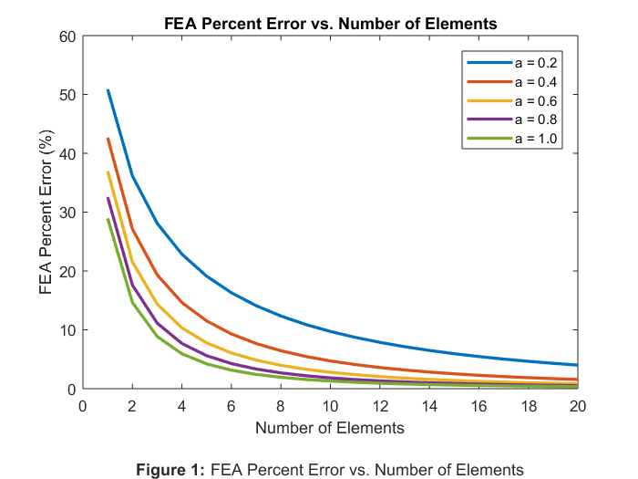

RAHUL GOYAL HW7
ME 328 Fall 2018 - Homework Assignment #7
Author: RAHUL GOYAL
California Polytechnic State University, San Luis Obispo, CA
Date Created: November 26, 2018
Date Modified: November 28, 2018
Description: The objective of this assignment is to set up a program to solve the tapered beam problem presented below. The task is to derive the exact solution and look at how the finite element solution converges to the exact solution as the number of elements is increased.
Contents
Reset
close all; clear all; clc;
Constants / Given Values
b = 3; % Base (in) t = 0.1; % Thickness (in) L = 10; % Length (in) P = 1000; % Force (lb) E = 30*10^6; % Young's Modulus (psi) a = 0.2:0.2:1.0; % Solve with a = [0.2, 0.4, 0.6, 0.8, 1.0] elements = 1:20; % Solve with elements = [1, 2, ..., 20]
Exact Solution
% Create empty delta matrix delta_exact = zeros(length(a), 1); % Loop: a = [0.2, 0.4, 0.6, 0.8, 1.0] for a_i = a % Store beam displacement for given a delta_exact(int8(a_i*5)) = P*L/(E*b*t) * log(L/a_i); end
Finite Element Analysis
% Create empty delta matrix delta_FEA = zeros(length(a), length(elements)); % Loop: a = [0.2, 0.4, 0.6, 0.8, 1.0] for a_i = a % Loop: elements = [1, 2, ..., 20] for e_i = elements % Create the Elemental Stiffness Matrices k_i = zeros(e_i, 2, 2); % Create empty elemental matrices L_i = (L-a_i) / e_i; % Element length (in) [constant] for i = e_i:-1:1 % Loop: i = [elements, ..., 2, 1] % Elemental average area (in^2) A_i = b * t/L*(a_i + i*L_i - L_i/2); % Elemental stiffness matrix (lb/in) k_i(1+(e_i-i), :, :) = [A_i*E/L_i, -A_i*E/L_i; -A_i*E/L_i, A_i*E/L_i]; end % Combine Elemental Stiffness Matrices k = zeros(e_i+1); % Create empty global stiffness matrix for i = 1:e_i % Loop: i = [1, 2, ..., elements] % Add elemental matrix in correct position to global matrix k(i:i+1, i:i+1) = k(i:i+1, i:i+1) + squeeze(k_i(i, :, :)); end % Reduce Global Stiffness Matrix k = k(2:e_i+1, 2:e_i+1); % Delete first row and column % Form Force Vector F = zeros(e_i, 1); % Create empty force vector F(e_i) = P; % Set force on last element to P % Invert Global Stiffness Matrix k_inv = inv(k); % Invert global stiffnes matrix % Solve for Displacement Vector delta_i = k_inv*F; % Displacement of each element % Store beam displacement for given a and number of elements delta_FEA(int8(a_i*5), e_i) = delta_i(end); end end
FEA Percent Error vs. Number of Elements
% Create empty error matrix error = zeros(length(a), length(elements)); % Loop: a = [0.2, 0.4, 0.6, 0.8, 1.0] for a_i = a i_a = int8(a_i*5); % Convert a_i to iteration number % Store relative error for given a error(i_a, :) = (delta_FEA(i_a, :) - delta_exact(i_a))/delta_exact(i_a); end % Plot plot(elements, abs(error*100), 'LineWidth', 2) title('FEA Percent Error vs. Number of Elements'); xlabel({'Number of Elements' '' % Figure label '\bfFigure 1: \rmFEA Percent Error vs. Number of Elements'}); ylabel('FEA Percent Error (%)'); legend('a = 0.2', 'a = 0.4', 'a = 0.6', 'a = 0.8', 'a = 1.0');